Available Itineraries
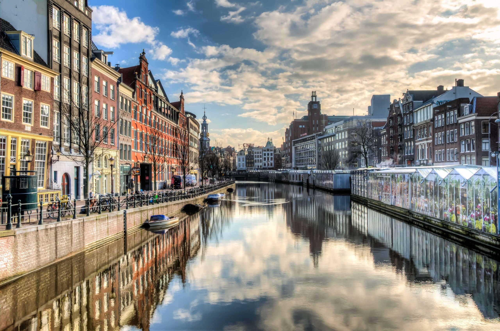
Grand Rhine & Dutch Canals
Delight your senses on a journey through the Netherlands, Belgium, Germany, France, and Switzerland. Taste rich Belgian chocolates and inhale the aroma of fresh waffles. Visit fairytale castles like de Haar, Gaasbeek, and Ghent's Castle of the Counts. Cruise the Rhine, a UNESCO World Heritage Site lined with 40 castles.
Learn More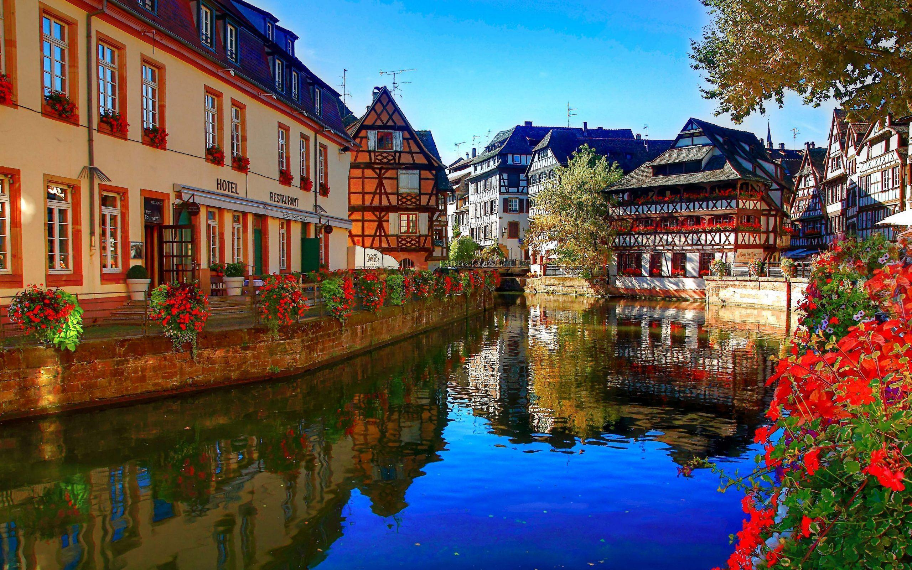
Captivating Rhine
Sail the legendary Rhine, surrounded by vineyard-covered hills and storybook castles. Explore France's Alsace region, from Strasbourg's charm to Colmar's timeless beauty. Discover Breisach and sunlit Freiburg, and savor local delights like Rüdesheimer coffee and German beer. From Amsterdam's canals to the Swiss Alps, immerse yourself in the heart of Europe's most captivating destinations.
Learn More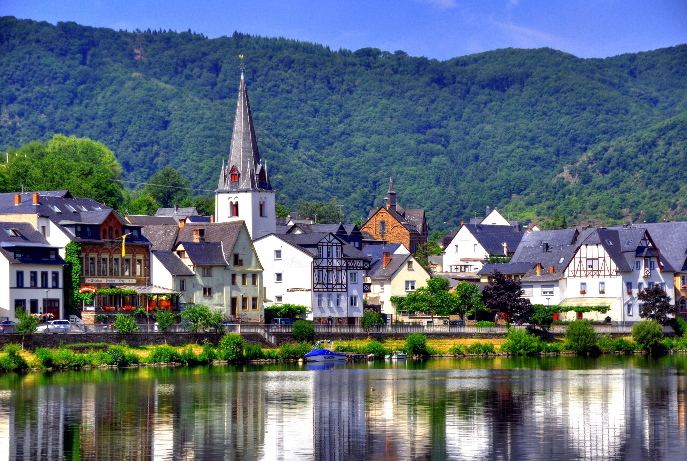
Rhine & Moselle Splendors
Expand your imagination in fairytale villages such as Trier, with its ancient Roman treasures, and enchanting Cochem where folklore and history come alive. Whimsical fantasies abound at Siegfried's Mechanical Instrument Cabinet and at the Palace Gardens of Schwetzingen. Blend German heritage with French heritage in Strasbourg on this most splendid journey.
Learn More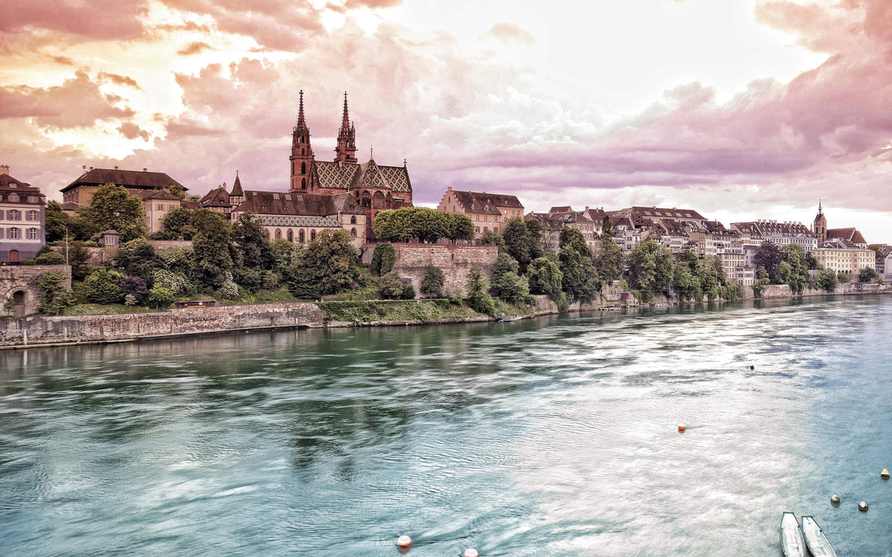
Rhine Castles & Swiss Alps
Experience a fairytale journey along the Rhine, where castles and vineyards create a storybook scene. Begin in Amsterdam's charming canals before exploring Cologne, Rüdesheim, and Heidelberg. Cruise through the UNESCO-listed Rhine Gorge, where 40 castles crown the hillsides. Discover Strasbourg's Alsatian allure and the stunning Swiss Alps.
Learn More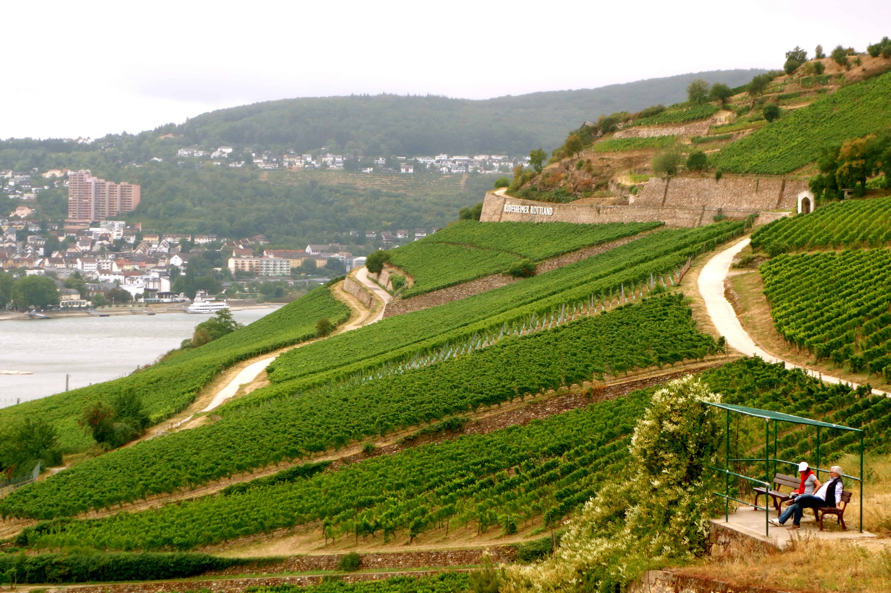
Vineyards of the Rhine & Moselle
Drink in the beauty, history and flavor of the Rhine and Moselle river valleys' iconic vineyards. Begin with a ride through Amsterdam's legendary canals, then head to Cologne to taste Kölsch beer. Soar above vineyards by gondola or hike among the grapes in Rüdesheim and sip wines in Bernkastel.
Learn More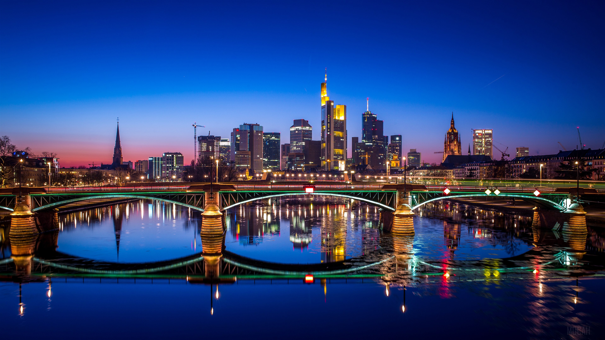
Europe's Rivers & Castles
Cruise through Europe's most picturesque landscapes, from the winding Main to the castle-dotted Upper Middle Rhine and the vineyard slopes of the Moselle. Stroll through storybook towns like Bernkastel, Cochem, and Rothenburg along the Romantic Road.
Learn More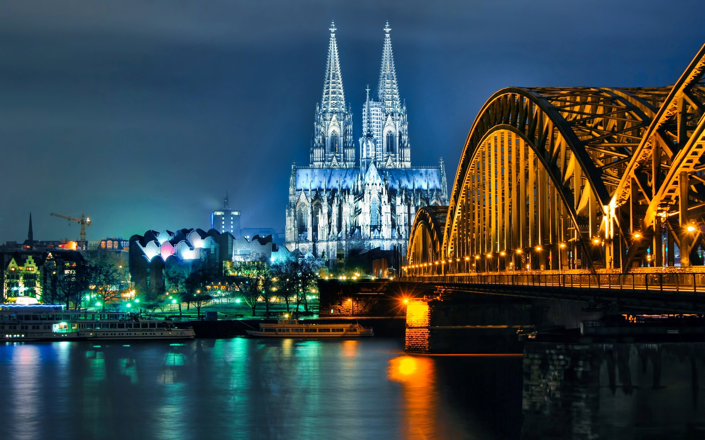
Rhine & Moselle Delights
Explore the Rhine and Moselle, where fairytale towns and iconic cities reveal the heart of Europe. Sail from Basel's pristine beauty to Amsterdam's colorful canals, uncovering history and legend. Wander through Bernkastel and Cochem, hike vineyards, and ride a gondola above the Rhine.
Learn More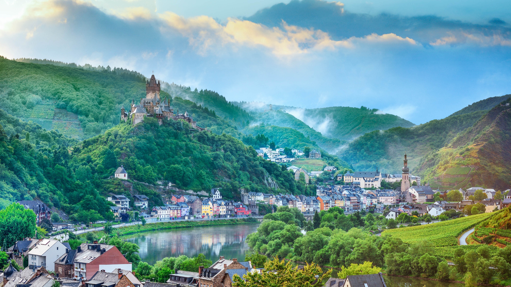
Swiss Alps & Rhine Castles
Embark on a storybook Rhine journey through the Netherlands, Germany, France, and Switzerland. Explore Amsterdam's canals, Cologne's grandeur, and the charm of Rüdesheim and Heidelberg. Cruise the UNESCO-listed Rhine Gorge and marvel at the Swiss Alps on this enchanting voyage.
Learn More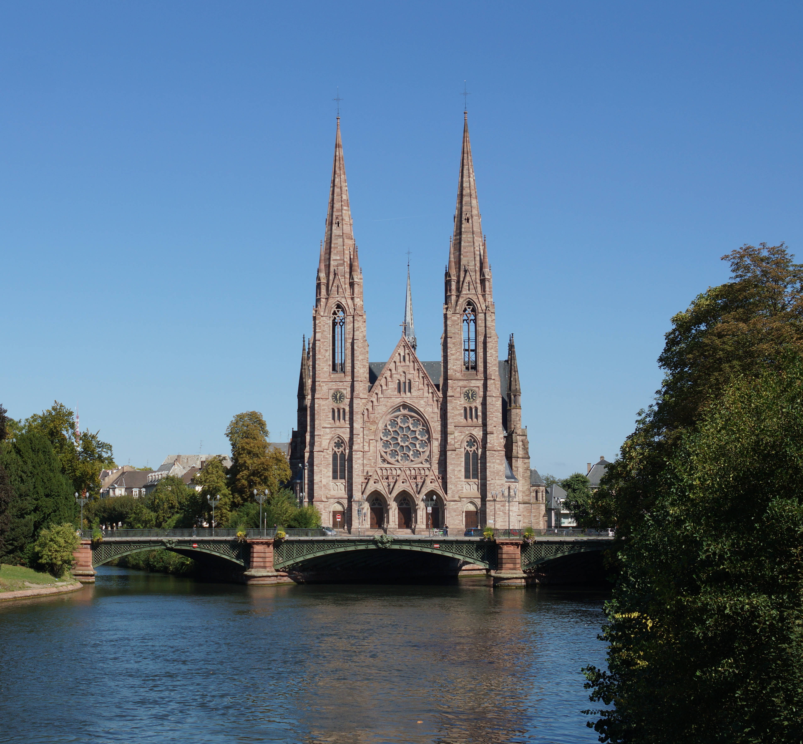
Enchanting Rhine
Experience the perfect balance of history and innovation in Europe's grand cities. Visit Heidelberg, where Mark Twain found inspiration for A Tramp Abroad. Savor Germany's timeless traditions, from legendary beers to rich Rüdesheimer coffee. Cruise the UNESCO-listed Rhine, where 40 castles line the river.
Learn More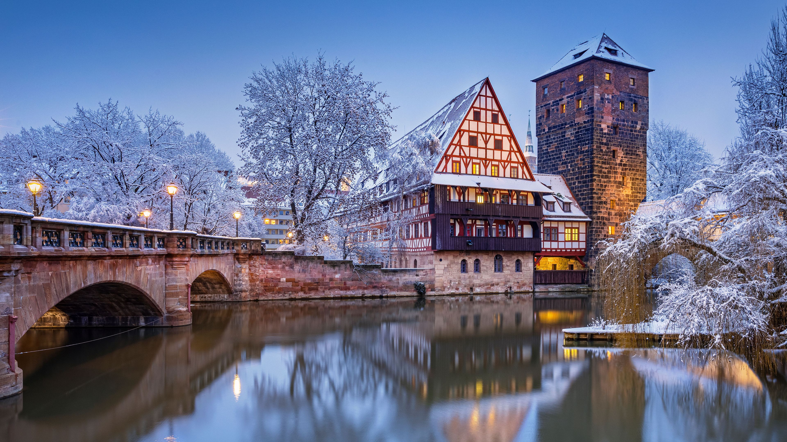
Medieval Treasures
Step into centuries of history in the medieval towns of Rothenburg, Bamberg, and Miltenberg. Admire the grandeur of the Würzburg Residenz and Mannheim Baroque Palace. Savor Rüdesheimer coffee, Bamberg's smoked beer, and the timeless treasures of Europe.
Learn More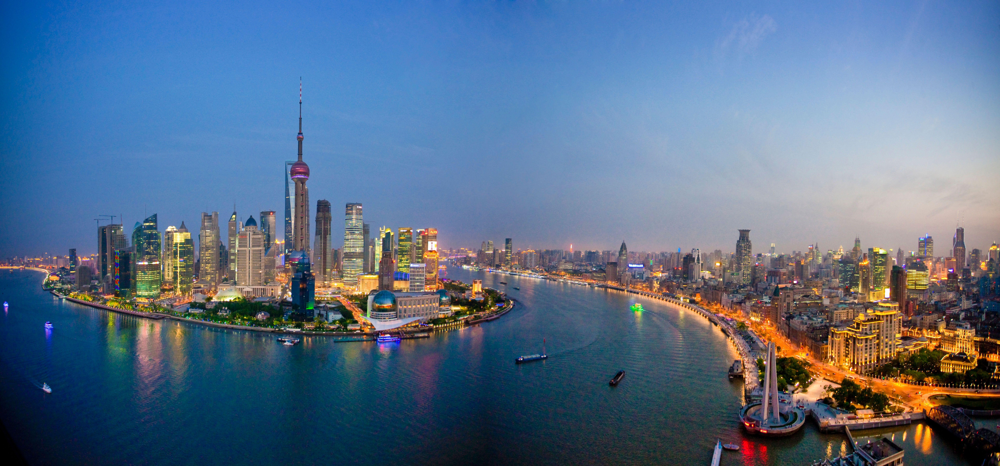
Rhine & Moselle Fairytales
Step into a fairytale as you sail the castle-lined Rhine and the scenic Moselle, surrounded by Europe's steepest vineyards. Discover the charm of Alsace in Strasbourg and Riquewihr, where French and German cultures intertwine.
Learn More
Magnificent Europe
Follow the path of emperors and royalty on a grand voyage along the Danube, Main, and Rhine through five captivating countries. Discover UNESCO treasures like Cologne's Cathedral, Würzburg's Residenz Palace, and the Old Towns of Bamberg and Regensburg.
Learn More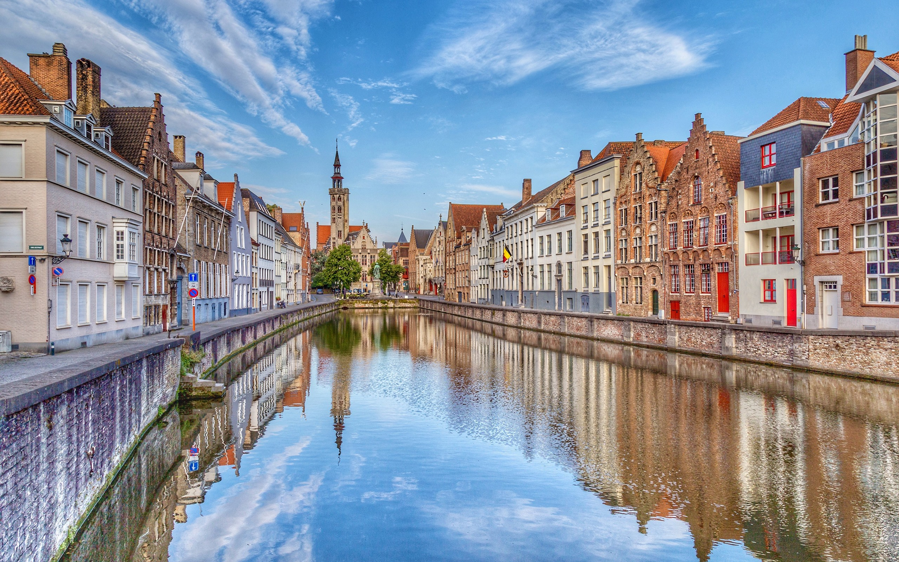
Grand Rhine & Parisian Lights
A 14-night journey shaped by two of Europe's great rivers — pairing Parisian nights and the historic streets of Rouen with visits to elegant châteaux along the Seine, then the Rhine's vineyard-lined valleys, castle-topped gorges, and the Alsatian charm of Strasbourg and Colmar.
Learn More